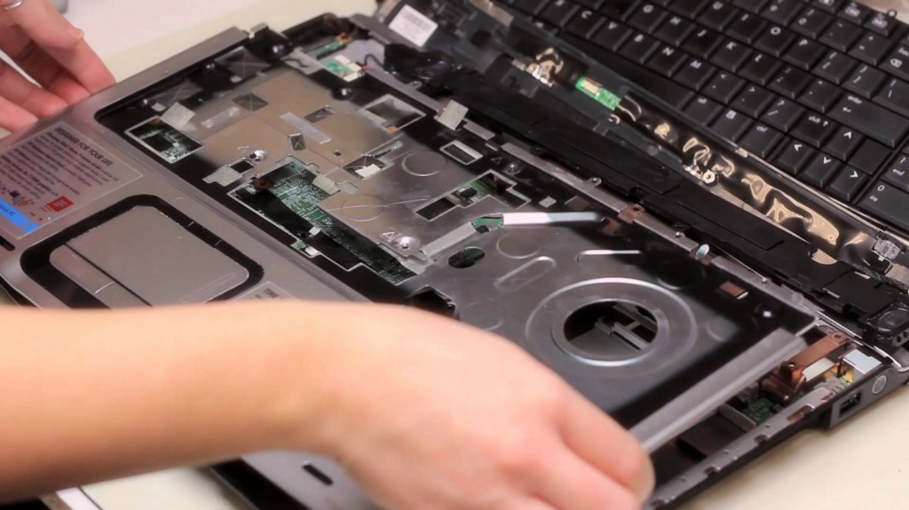

Servidores
Contamos con amplia experiencia en servidores como controladores de Dominio: Configuracion de Politicas de Seguridad Microsoft Exchange Active Directory ISA Server Migracion de Sistema Operativo y Perfiles de Usuarios Backup Automatizado Mantenimiento Preventivo
Servicios de Hardware y Software

Tenemos experiencia en diagnóstico y reparación de equipos de escritorio, portables y servidores.
Contamos con proveedores de repuestos para el cambio de parte
Notebooks
Tenemos experiencia en diagnóstico y reparación de equipos de escritorio, portables y servidores.
Contamos con proveedores de repuestos para el cambio de parte
Networking

Realizamos diagnóstico de red a nivel físico y lógico. Instalación y puesta en marcha de puestos de trabajo. Instalación y configuración de redes inalámbricas indoor y outdoor. Servicio de Internet Satelital para sitios remotos y en cualquier parte del país Telefonía IP Configuración de VPN - Routers